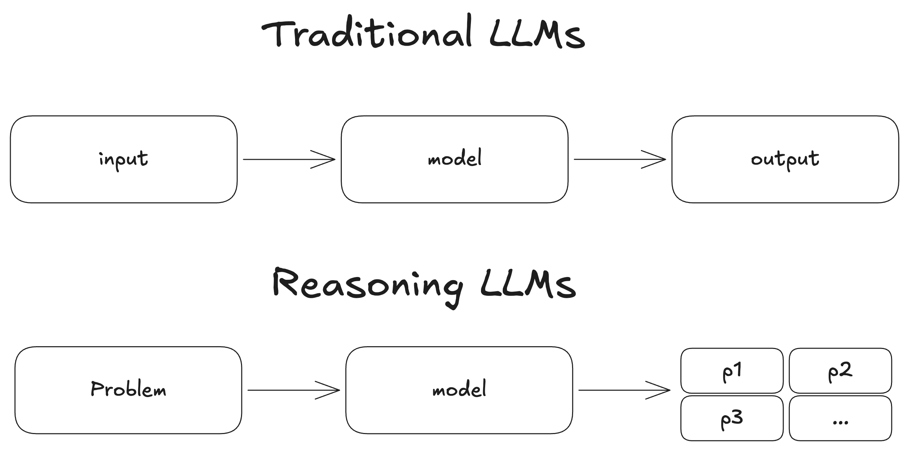
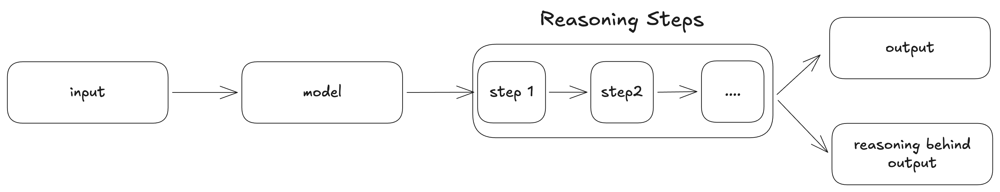
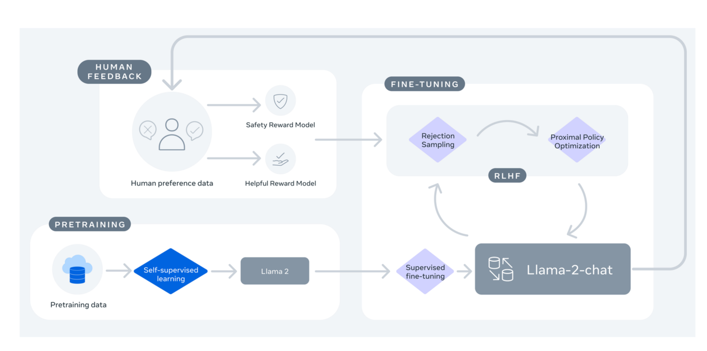
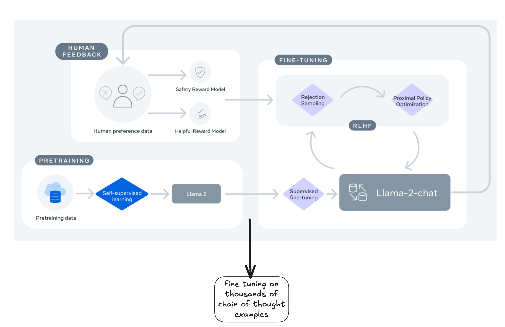
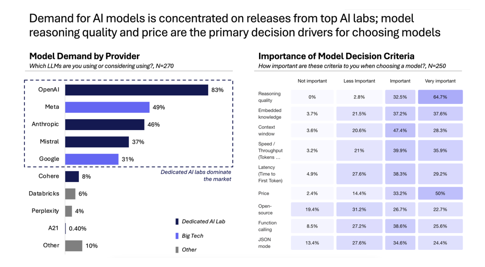
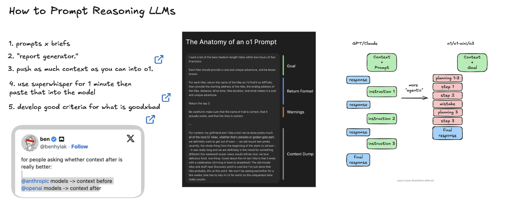
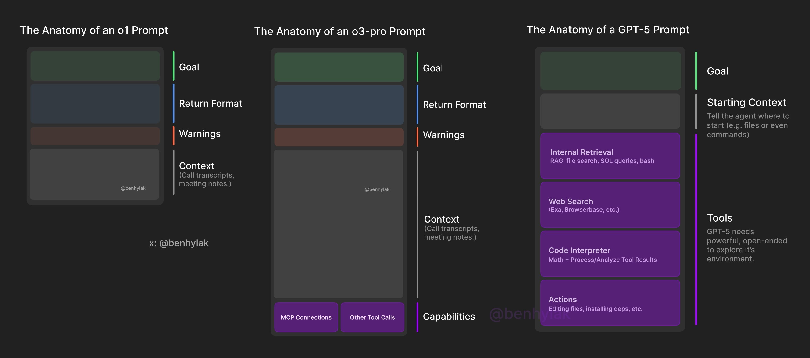
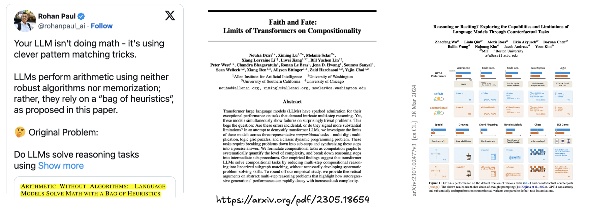

class: center, middle # Working with Reasoning Models ## How and when to use LLMs for thinking and reasoning ### Instructor: Lucas B. Nicolosi Soares --- # Agenda 1. What is a Reasoning LLM? -- 2. Theory Behind Reasoning -- 3. Reasoning Models vs Traditional LLMs -- 4. Why use a Reasoning LLM? -- 5. When to use a Reasoning LLM? -- 6. How to Use a Reasoning LLM? -- 7. Limitations of Reasoning LLMs -- 8. Choosing a Reasoning LLM -- 9. Hands-on with Reasoning LLMs -- 10. From Benchmarks to Applications --- # What is a Reasoning LLM?  --- # How? --  --- # How an LLM is Trained - Busy Person Guide  --- # How an LLM is Trained - Busy Person Guide  --- # What is a Reasoning LLM? - Language models designed for complex, multi-step problems -- - Generate intermediate reasoning steps or "thought processes" -- - Break down tasks into logical sub-steps -- - Similar to human step-by-step problem solving -- - **Key Insight**: Pretrained LLMs can already reason - if you decode properly! -- - More accurate and explainable results on challenging tasks: - Mathematical problems - Logic puzzles - Code debugging --- # Theory Behind Reasoning ## Why Intermediate Steps Matter -- - **Circuit Complexity**: Problems of circuit size T require O(T) intermediate tokens -- - **Serial Processing**: Constant-size transformers solve complex problems through serialization -- - **Direct vs Step-by-Step**: Direct answer generation may fail without intermediate reasoning -- - **Thinking Budget**: Performance scales with output length, not just model size -- - **Justification**: This explains why "let it think longer" improves accuracy --- class: center, middle # Q&A & Break --- class: center, middle # Reasoning Models vs Traditional LLMs --- ## Traditional LLMs - Direct pattern-based prediction -- - One-shot "I'm feeling lucky" approach -- - Quick but less reliable on complex tasks -- - No explicit reasoning steps ## Reasoning LLMs -- - Step-by-step problem solving -- - Chain-of-thought (CoT) approach -- - More methodical but slower -- - Shows intermediate steps -- - **Decoding matters**: Not just prompting, but how we sample and select --- class: center, middle # Q&A & Break --- # Key Capabilities of Reasoning LLMs 1. __Chain-of-Thought Reasoning__ -- - Internal dialogue approach -- - Step-by-step problem solving -- - "Thinking aloud" in text -- - **Beyond prompting**: CoT as a decoding strategy -- 2. __Self-Consistency__ -- - Verifies own answers -- - Revisits problematic solutions -- - **Key**: Marginalizing over reasoning paths via sampling -- 3. __Structured Outputs__ -- - Organized reasoning steps -- - Numbered thoughts -- - Traceable calculations --- # Advanced Decoding Strategies ## From Prompting to Decoding -- 1. **Multi-Sample Generation** - Generate multiple candidate solutions - Not just greedy decoding -- 2. **Confidence-Based Selection** - Pick most confident answer, not longest rationale - Answer confidence correlates with correctness -- 3. **Self-Consistency Voting** - Sample multiple paths - Majority vote on final answer - Approximates marginalization -- 4. **Universal Self-Consistency** - Extends beyond single-number answers - Models self-select most consistent response - Works for free-form outputs --- class: center, middle # Why use a Reasoning LLM? --- <div style="margin-top: 100px;">  </div> <p style="font-size: 14px; margin-left: 0px"> <a href='https://artificialanalysis.ai/'>Artificial Analysis AI Review</a> </p> --- class: center, middle # When to use a Reasoning LLM? --- # When to use a Reasoning LLM? - Background tasks where latency isn't critical -- - Complex problems requiring deeper thinking -- - Tasks benefiting from extensive reasoning -- - Research and planning-heavy workflows -- - **When you can verify**: Tasks with auto-verifiable outputs --- ## Ideal Use Cases -- - **Complex Problem Solving** - Mathematical proofs - Logic puzzles - Multi-step reasoning -- - **Deep Analysis** - Research papers - Document analysis - Meeting notes interpretation -- - **Planning & Agency** - Workflow planning - Agentic systems - Strategic decision-making -- - **Retrieval + Reasoning** - RAG with reasoning chains - Evidence-based analysis - Multi-document synthesis --- ## Practical Applications -- - **Data Analysis** - Medical diagnostics - Complex data interpretation - Anomaly detection -- - **Background Processing** - Batch processing workflows - Overnight analysis jobs -- - **Evaluation Tasks** - LLM as judge (with confidence scoring) - Quality assessment - Verification workflows --- class: center, middle # Q&A & Break --- # How to Use a Reasoning LLM? --- # Core Techniques for Reasoning LLMs ## 1. Decoding-Based Chain-of-Thought ```python def cot_decode(prompt, model, n_samples=5): candidates = [] for _ in range(n_samples): response = model.generate(prompt, temp=0.7) answer = extract_answer(response) confidence = model.score_answer(response, answer) candidates.append((response, answer, confidence)) # Select by confidence, not length! best = max(candidates, key=lambda x: x[2]) return best[0] # Return full reasoning ``` -- **Key**: Sample multiple candidates, select by answer confidence --- # Core Techniques for Reasoning LLMs ## 2. Self-Consistency Pattern ```python def self_consistency(prompt, model, n_samples=10): answers = [] for _ in range(n_samples): response = model.generate(prompt, temp=0.5) answer = extract_answer(response) answers.append(answer) # Majority voting from collections import Counter votes = Counter(answers) return votes.most_common(1)[0][0] ``` -- **Key**: Marginalize over reasoning paths via voting --- # Core Techniques for Reasoning LLMs ## 3. Thinking Budget Control ```python def controlled_reasoning(prompt, model, thinking_tokens=500): config = { "max_thinking_tokens": thinking_tokens, "reasoning_mode": "serial", "intermediate_outputs": True } response = model.generate(prompt, **config) return response ``` -- **Key**: Scale output length as a first-class parameter -- - More tokens = deeper reasoning - Trade latency for accuracy - Monitor cost implications --- # Advanced Techniques ## 1. Analogical Reasoning ```python prompt = """ Problem: [Current problem] First, recall a similar problem you've solved: 1. Identify the pattern 2. Retrieve analogous solution 3. Adapt to current context Now solve step by step... """ ``` -- ## 2. Abstraction - "Take a Step Back" ```python prompt = """ Before solving, step back and consider: - What type of problem is this? - What are the key principles? - What strategy should I use? Now proceed with the solution... """ ``` --- # Aggregation Strategies ## Beyond Simple Voting -- 1. **Confidence-Weighted Selection** ```python weighted_answer = max(candidates, key=lambda x: x.confidence * x.consistency) ``` -- 2. **Universal Self-Consistency** ```python # For free-form outputs best = model.select_most_consistent(candidates) ``` -- 3. **Hierarchical Aggregation** ```python # Group similar reasoning paths clusters = cluster_by_approach(candidates) best_cluster = max(clusters, key=cluster_confidence) ``` -- **Remember**: Aggregation consistently outperforms one-shot ---  <p style="font-size: 14px; margin-left: 0px"> <a href=''></a> </p> --- class: center, middle # How to Prompt GPT-5?  <p style="font-size: 14px; margin-left: 0px"> <a href='https://www.latent.space/p/gpt-5-review'>GPT-5 Hands-On: Welcome to the Stone Age</a> </p> --- class: center, middle # Q&A & Break --- # Limitations of Reasoning LLMs -- ## 1. Performance Trade-offs - **Increased latency**: Extended thinking process leads to significantly longer response times -- - **Higher resource requirements**: Often require more computational resources -- - **Cost implications**: More tokens and processing time translate to higher operational costs -- - **Scalability challenges**: Multiple concurrent requests become more resource-intensive --- # Limitations of Reasoning LLMs ## 2. Reasoning Quality Constraints - **Domain-specific limitations**: Performance varies considerably across different subject areas -- - **Brittleness with novel problems**: May struggle with problem types not encountered during training -- - **Inconsistent depth of reasoning**: Quality of reasoning can vary within the same model -- - **Over-confidence in incorrect reasoning**: May present flawed reasoning with high confidence --- # Limitations of Reasoning LLMs ## 3. Knowledge and Context Limitations - **Bounded knowledge**: Limited to training data available at model development time -- - **Context window constraints**: Struggle with very lengthy problems despite large context windows -- - **Information integration challenges**: Difficulty maintaining coherence across extensive reasoning chains -- - **Limited transfer learning**: Reasoning in one domain doesn't always transfer to other domains --- # Limitations of Reasoning LLMs ## 4. Training and Deployment Challenges -- - **Prompting vs Fine-tuning Trade-offs** - Few-shot CoT: Simple but brittle - SFT: Often fails to generalize - RL: Requires reliable verifiers -- - **Verifier Dependency** - Success hinges on verifier quality - Auto-verification only possible for some tasks - Human verification doesn't scale -- - **Decoding-Objective Mismatch** - Model's next-token distribution ≠ user goals - Probabilistic outputs vs deterministic needs - Requires careful aggregation strategies --- ## Limitations of Reasoning LLMs  <p style="font-size: 14px; margin-left: 0px"> <a href='https://arxiv.org/pdf/2305.18654'>Dziri et al. (2023)</a> </p> <p style="font-size: 14px; margin-left: 0px"> <a href='https://arxiv.org/pdf/2307.02477'>Wu et al. (2024)</a> </p> --- class: center, middle # Q&A & Break --- # Choosing a Reasoning LLM ## Key Selection Criteria -- ### ✅ Core Capabilities - [ ] Built-in verifier support - [ ] Efficient multi-sample decoding - [ ] Configurable thinking budget - [ ] Self-consistency mechanisms -- ### ✅ Integration Features - [ ] RAG integration quality - [ ] API support for confidence scores - [ ] Streaming intermediate steps - [ ] Batch processing capabilities -- ### ✅ Training Approach - [ ] Prompted reasoning vs fine-tuned - [ ] RL-finetuned with verifiers - [ ] Domain-specific adaptations - [ ] Transfer learning capabilities --- # Choosing a Reasoning LLM (cont.) ## Cost vs Performance Trade-offs -- ### 💰 Cost Considerations - Token usage (thinking + output) - Sampling overhead (n-samples) - Latency requirements - Batch vs real-time pricing -- ### 📊 Performance Metrics - Accuracy on your specific tasks - Consistency across samples - Verifiability of outputs - Explanation quality -- ### 🔧 Practical Factors - API rate limits - Context window size - Output format control - Error handling capabilities --- class: center, middle # Hands-on with Reasoning LLMs --- # Lab 1: Self-Consistency Implementation .small-code[ ```python import openai from collections import Counter def reasoning_with_voting(question, n_samples=5): """Implement self-consistency with majority voting""" prompt = f"""Solve step-by-step: {question} Show your reasoning clearly. Final answer: [your answer here]""" answers = [] reasoning_traces = [] for i in range(n_samples): response = openai.chat.completions.create( model="gpt-4", messages=[{"role": "user", "content": prompt}], temperature=0.7 ) full_response = response.choices[0].message.content # Extract answer from response answer = extract_final_answer(full_response) answers.append(answer) reasoning_traces.append(full_response) # Majority voting final_answer = Counter(answers).most_common(1)[0][0] return final_answer, reasoning_traces ``` ] --- # Lab 2: Confidence-Based Selection .medium-code[ ```python def confidence_scored_reasoning(question, n_samples=5): """Select answer based on confidence, not length""" candidates = [] for _ in range(n_samples): # Generate reasoning reasoning = generate_reasoning(question) # Extract answer answer = extract_answer(reasoning) # Score confidence (using model self-evaluation) confidence_prompt = f""" Given this reasoning: {reasoning} And answer: {answer} Rate confidence (0-1): """ confidence = get_confidence_score(confidence_prompt) candidates.append({ 'reasoning': reasoning, 'answer': answer, 'confidence': confidence }) # Select by confidence, not length! best = max(candidates, key=lambda x: x['confidence']) return best ``` ] --- # Lab 3: Retrieval + Reasoning Chain .small-code[ ```python def rag_with_reasoning(query, documents): """Combine retrieval with chain-of-thought reasoning""" # Step 1: Retrieve relevant context relevant_docs = retrieve_documents(query, documents, top_k=3) # Step 2: Construct reasoning prompt with evidence prompt = f""" Question: {query} Available Evidence: {format_documents(relevant_docs)} Please: 1. Analyze the evidence step by step 2. Identify key information 3. Reason through the problem 4. Provide your conclusion Let's think step by step: """ # Step 3: Generate reasoning with retrieval context response = generate_with_cot(prompt) # Step 4: Verify answer against evidence verification = verify_against_sources(response, relevant_docs) return { 'answer': response, 'sources': relevant_docs, 'verification': verification } ``` ] --- # Practical Demo: Numeric Puzzle with Meta-Strategies .small-code[ ```python def numeric_puzzle_with_meta_reasoning(target): """Demonstrate explicit meta-strategies in reasoning""" prompt = f""" Target number: {target} Meta-strategy thinking: 1. First, consider factorization of {target} 2. Check if it's prime or composite 3. If composite, find factors near √{target} ≈ {int(target**0.5)} 4. Consider arithmetic patterns Now solve step by step using these strategies: """ # Generate with explicit thinking mode response = model.generate( prompt, thinking_mode="explicit", max_thinking_tokens=1000, show_meta_reasoning=True ) return { 'meta_strategy': extract_meta_strategy(response), 'detailed_steps': extract_steps(response), 'final_answer': extract_answer(response) } # Example usage result = numeric_puzzle_with_meta_reasoning(143) print(f"Meta-strategy: {result['meta_strategy']}") print(f"Solution: {result['final_answer']}") ``` ] --- class: center, middle # From Benchmarks to Applications ## Moving Beyond Single-Answer Tasks --- # Beyond Benchmarks: Real-World Applications -- ## Current State: Benchmark Saturation - Single ground-truth answers are mostly solved - Need evaluation for open-ended tasks - Focus shifting to real applications -- ## Building Production Systems -- 1. **Custom Verifiers** - Domain-specific evaluation - Business logic validation - Safety and compliance checks -- 2. **Human-in-the-Loop** - Confidence thresholds for escalation - Explanations for decision support - Iterative refinement workflows -- 3. **Composite Reasoning Systems** - Multiple models with different strengths - Ensemble approaches - Specialized verifiers per domain --- # Future Directions ## North Star: Reasoning for Real Problems -- ### Near-term Opportunities - **Medical Diagnosis**: Multi-step differential diagnosis - **Legal Analysis**: Case law reasoning with citations - **Scientific Research**: Hypothesis generation and testing - **Software Engineering**: Architecture decisions with trade-offs -- ### Key Enablers - **Better Verifiers**: Moving beyond correctness to usefulness - **Efficient Decoding**: Reducing cost of multi-sample approaches - **Domain Adaptation**: Fine-tuning for specific reasoning patterns - **Explainability**: Making reasoning traces useful for humans -- ### The Path Forward - Reasoning + Tools + Retrieval - Continuous learning from feedback - Reasoning about reasoning (meta-cognition) --- # Key Takeaways -- 1. **Decoding Matters**: It's not just about prompting - how you sample and select changes everything -- 2. **Confidence Over Length**: Don't pick the longest rationale, pick the most confident answer -- 3. **Aggregation Wins**: Multiple samples + smart selection consistently beats single-shot -- 4. **Thinking Budget**: Scale output length, not just model size -- 5. **Verifiers Are Key**: Success in RL fine-tuning depends on reliable verification -- 6. **Combine Approaches**: Retrieval + Reasoning > Reasoning alone -- 7. **Real Applications Need More**: Move beyond benchmarks to production systems --- # Connect With Me ## 📚 [Course materials](place-github-url) ## 🔗 [LinkedIn](https://www.linkedin.com/in/lucas-soares-969044167/) ## 🐦 [Twitter/X](https://x.com/LucasEnkrateia) ## 📺 [YouTube](https://www.youtube.com/@automatalearninglab) ## 📧 Email: lucasenkrateia@gmail.com ### References - Stanford CS-25: Reasoning with LLMs - Dziri et al. (2023) - Faith and Fate: Limits of Transformers on Compositionality - Wu et al. (2024) - Reasoning or Reciting? Exploring the Capabilities and Limitations ---